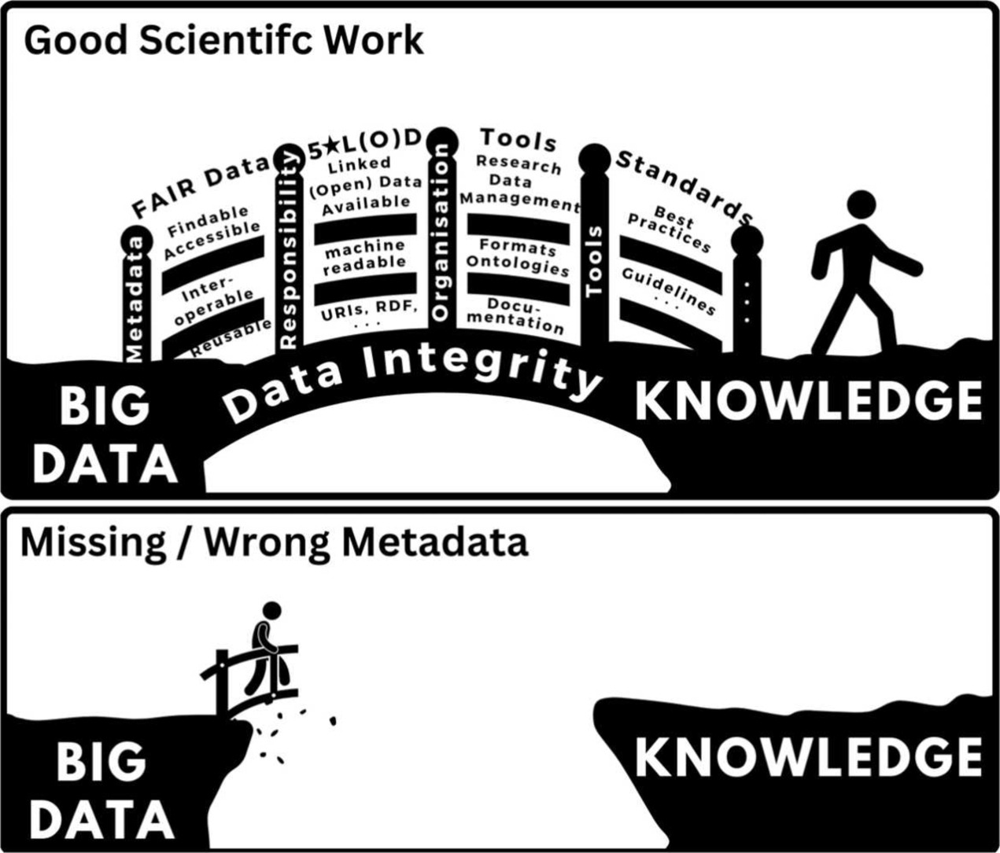
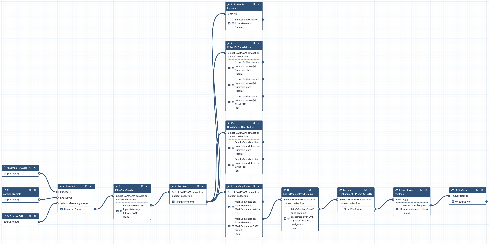

Your Pathogen Question.
A Reproducible Analysis.

Just Bring a Question
"I want to compare _______ across ________ to test ________ using ________ data."
You already ask questions molecular data can inform — BRC Analytics makes the computational path explicit, reproducible, and shareable.
From Intention to Analysis
Translating the question:
What was sequenced? Which technology?
What populations, times, or treatments differ?
Markers, variants, expression, or relatedness?
What result would change the interpretation?
BRC Analytics assists with this translation — through a traditional GUI or agentic surfaces.
The Platform
BRC Analytics connects the context, workflow, and execution.
BRC Analytics: browse and configure · Galaxy: execute, preserve provenance, share
Find Your Use Case
There is more than one way to enter the platform.
Do marker frequencies differ across districts?
Variant calling / genotype summaries
What changed after drug exposure?
RNA-seq / differential expression
What genomic or transcriptional variation matters?
Reference-guided analyses
Which variants or branches support a hypothesis?
Variants + comparative methods
The same interface can support very different data and biological questions.
Plasmodium SNP Calling
e.g., Workflow: Read Mapping, QC, and Variant Calling in Galaxy

Why This Is Difficult
Plasmodium is a good example to see the assumptions hidden in pipelines.
Training Orbit
Three sources of context taught Orbit how to build the pipeline.
7,182 P. falciparum genomes: mapping, BAM improvement, joint genotyping, filtering, masking, sample QC
GTN variant-calling tutorial (mpileup → call → filter); IWC survey found no population-scale joint-genotyping workflow
Organism catalog, assemblies and workflow context — plus the SRA lists and NCBI references for five species
Orbit
Maps each MalariaGEN step to a tool that runs in a workflow
The MalariaGEN Protocol
| Stage | MalariaGEN Pf6 (GATK3 / Picard) | Our homolog (bcftools / samtools, ARM64) |
|---|---|---|
| Host-read removal | Human reads discarded before mapping | Human reads discarded before mapping |
| Mapping | bwa mem 0.7.15 -M on 3D7 v3 | bwa mem 0.7.19 -M on reference genomes (PlasmoDB-70) |
| BAM improvement | Picard CleanSam, FixMate, MarkDuplicates | samtools fixmate -m + markdup -r |
| Base recalibration | GATK BQSR, Pf-crosses known sites | Not applied: no known sites for most species |
| Discovery | HaplotypeCaller per sample → GVCF | bcftools mpileup per batch (≤1,000 BAMs) |
| Joint genotyping | CombineGVCFs + GenotypeGVCFs (16 seqs) | call -m per batch, merge -0 per chromosome |
| Mixed infections | Diploid mode: hets mark mixtures | --ploidy 2, same rationale |
| Variant filtering | VQSR models, keep VQSLOD > 0 | Hard filters: QUAL, MQ, F_MISSING, FMT/DP, GQ |
| Region masking | Subtelomeres, hypervariable, centromeres | Not applied |
| Annotation | snpEff 4.1 + GeneDB GFF3 | bcftools csq + PlasmoDB GFF3 |
| Sample QC | Callability, replicates, contamination, species | Flags: reads, mapping, duplicates, variants |
Every stage translated to the Galaxy workflow shown earlier — the protocol became a recorded, rerunnable artifact.
Turning Data into a Working Run
One design effort, five species — the same workflow with different references.
Public Data Beyond P. falciparum
The Assistant Accelerates the Work;
the Researcher Owns the Inference
- Translate a published protocol into steps
- List tools, versions and settings
- Propose tests and document execution
- The relevant biological comparison
- Judge reference, ploidy and mixed infections
- Audit QC and reject implausible outputs
Variant Count Follows Chromosome Length
Chromosomes 11–14 Carry the Most Variants
From a One-Off Analysis
to an Organism Resource
- The workflow we built isn't a one-off — it's a reusable artifact for the next researcher with the same question.
- And the data it produced — variants, QC flags, annotations — can live alongside the organism's reference, not only in one history.
Both the workflow and its products can feed into the organism tab on brc-analytics.org — the analysis lands where the next person goes looking for the organism.
Assembled & Annotated Genomes
Existing ab initio predictors were built for model organisms — microbial eukaryotes are where they struggle: unusual genetic codes, unusual genome architectures.
We are developing state-of-the-art ab initio annotation tools specifically for these difficult genomes — and the Galaxy workflows around them, so annotation becomes a recorded, reusable analysis inside BRC Analytics.
Your First Analysis Can Start
with a Single Well-Posed Question
Choose a reference assembly and annotation.
Read inputs, assumptions and available outputs.
Run a small dataset and inspect the Galaxy history.
Scale from the pilot to your full dataset — all inside the browser.
brc-analytics.org · training.galaxyproject.org
Stuck or missing a piece? help@brc-analytics.org — or try Orbit (github.com/galaxyproject/orbit) if you want a less-guided agent; same Galaxy history either way.

BRC Analytics · NIAID 1U24AI183870
- Anton Nekrutenko — Penn State
- Sergei L. Kosakovsky Pond — Temple University
- Maximilian Haeussler — U. California, Santa Cruz
- Kelsey Beavers — University of Texas
- Michael Schatz — Johns Hopkins University